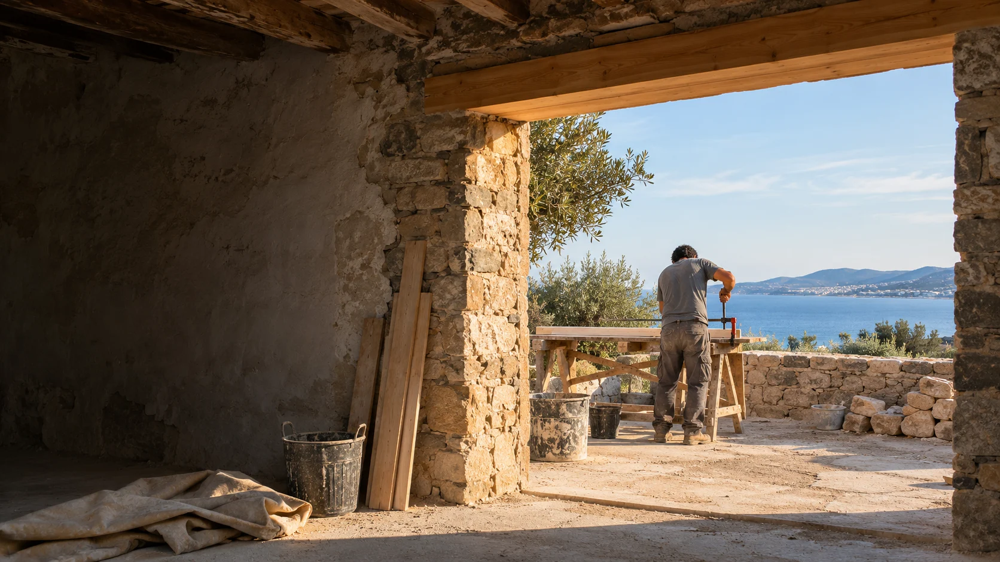
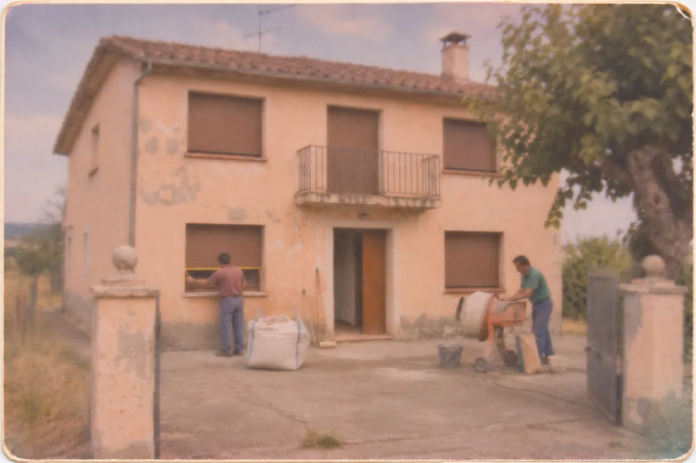
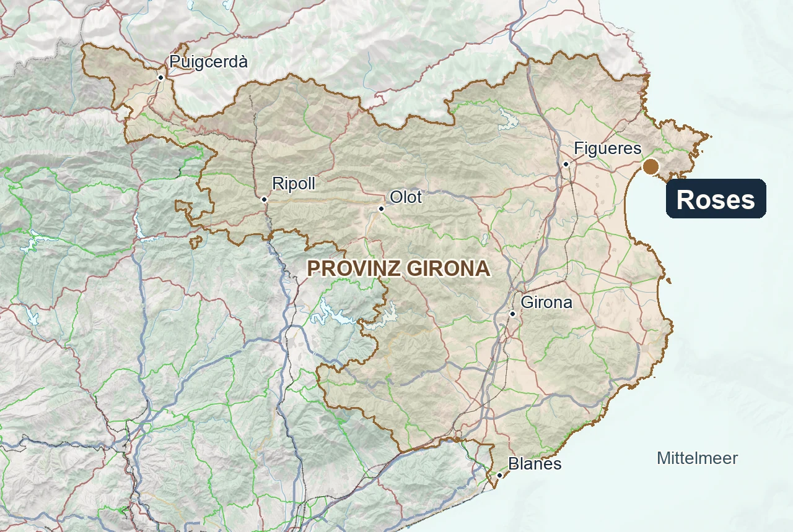

Bau und Sanierung in vier Epochen
Scrollen Sie weiter oder wählen Sie „Vorher“ und „Nachher“, um die Veränderungen zu sehen.
Illustrative Beispiele für Bau- und Sanierungsarbeiten.
Illustrative Beispiele für Bau- und Sanierungsarbeiten.
1980er
Abgeplatzter Putz und verwitterte Fensterläden.


1990er
Abgeplatzter Fassadenputz und Feuchtigkeit unter dem Balkon.


2000er
Ein sanierungsbedürftiger Vorbau und ein beschädigter Außenbelag.

2026
Eine Villa im Bau, mit Maurerarbeiten auf beiden Etagen und dem Meer im Hintergrund.

Projektbeispiel
Sanierung eines Vorbaus
8 Mitarbeiter
unter Manolos Leitung

Beispiel für eine Sanierung mit illustrativen Bildern.
Sanierter Vorbau mit neuem Bodenbelag
Die Gesamtansicht zeigt den Eingang, den Vorbau und den Außenbelag nach Abschluss der Arbeiten.
Was bei einer Sanierung oft verborgen bleibt
Diese drei Punkte an einer feuchten Fassade zeigen, wo Wasser eindringen kann und wie es abfließt.

Illustratives Beispiel einer sanierten Fassade.
Der Anschluss am Fenster
Wir prüfen die Fuge zwischen Rahmen und Wand sowie die Fensterbank darunter. Sie hilft, Regenwasser von der Fassade wegzuleiten.

Manolo kennenlernen
Seit über 50 Jahren baut, saniert und repariert Manolo Häuser im Empordà. Beim ersten Termin besichtigt er das Objekt mit Ihnen, bespricht die nötigen Arbeiten und klärt, womit Sie beginnen.
Manolo bleibt Ihr Ansprechpartner vom ersten Termin bis zur abschließenden Kontrolle.
Von der ersten Besichtigung bis zur abschließenden Kontrolle
Sie sprechen direkt mit Manolo. Er koordiniert sein Team aus 8 Mitarbeitern.
-

Wir besichtigen das Objekt
Wir sehen uns an, was am Haus zu tun ist, und besprechen Ihre Wünsche.
-
Wir planen die Arbeiten
Wir legen fest, welche Arbeiten anstehen und in welcher Reihenfolge.
-
Wir prüfen die Ausführung
Wir gehen die ausgeführten Arbeiten mit Ihnen durch und klären offene Fragen.
Illustrative Szenen.
Erzählen Sie Manolo von Ihrem VorhabenLeistungen
Von der kleinen Reparatur bis zur Komplettsanierung.
Häuser und Wohnungen sanieren
Modernisierung von Häusern, Wohnungen und Ferienimmobilien.
Bäder und Küchen
Die Räume renovieren, die Sie täglich am meisten nutzen.
Maurerarbeiten und kleinere Bauarbeiten
Reparaturen und kleinere Arbeiten, die eine saubere Ausführung verdienen.
Fassaden und Sanierung
Mauern, Außenputz und Oberflächen im Freien instand setzen.
Dächer und undichte Stellen
Dächer prüfen und die Ursache für eindringendes Wasser finden.
Steinarbeiten und Außenbereiche
Mauern, Bodenbeläge und Abschlüsse aus Stein.
Fragen vor dem Start
Übernehmen Sie auch kleinere Arbeiten?
Ja. Sagen Sie mir, was Sie brauchen und wo sich das Objekt befindet.
Welche Angaben brauchen Sie bei einem Anruf?
Nennen Sie mir den Ort, die geplanten Arbeiten und ob es dringend ist. Fotos können Sie mir auch per WhatsApp schicken.
Arbeiten Sie auch außerhalb von Roses?
Ich arbeite in Roses und im Alt Empordà. Sagen Sie mir, wo sich Ihr Objekt befindet, dann sehen wir, was möglich ist.
Einsatzgebiet
Provinz Girona
Mein Betrieb ist in Roses. Nennen Sie mir den Ort, an dem sich Ihr Objekt befindet, dann sage ich Ihnen, ob ich zu Ihnen kommen kann.
Für meinen Ort anfragen

Kontakt
Sprechen wir über Ihr Bauvorhaben.
Sagen Sie mir, was Sie vorhaben und wo sich das Objekt befindet.